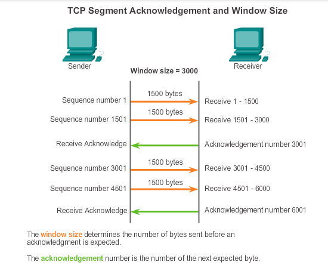

Jaringan Komputer
Transmission Control Protocol
Model Referensi TCP/IP
TCP/IP Layer atau disebut dengan Transmission Control Protocol/Internet Protocol layer merupakan model komunikasi data yang dikempangkan oleh US Department of Defense (DoD) yang merepresentasikan komunikasi data antar peralatan jaringan dan antar jaringan. Protokol internet pertama kali dirancang pada tahun 1980-an. Akan tetapi di tahun 1990-an dimana internet semakin populer dan host yang semakin banyak, mulai bemunculan protokol yang hanya bisa digunakan oleh kalangan tertentu, atau protokol yang dibuat oleh pabrik tertentu yang belum tentu kompatibel dengan protokol lain dari pabrik yang lain pula. Sehingga pada akhirnya badan International Standart Organization (ISO) membuat standarisasi protokol yang saat ini dikenal dengan protokol model Open System Interconnection atau disingkat OSI. Model OSI ini manjadi referensi dan konsep dasar teori tentang cara kerja sebuah protokol.
Dalam perkembangannya TCP/IP digunakan sebagai standart de facto. Arsitektur TCP/IP tidaklah berbasis model referensi tujuh lapis OSI, tetapi menggunakan model referensi DARPA. TCP/IP mengimplemenasikan arsitektur berlapis yang terdiri atas empat lapis. Empat lapis ini, dapat dipetakan (meski tidak secara langsung) terhadap model referensi OSI. Empat lapis ini, kadang-kadang disebut sebagai DARPA Model, Internet Model, atau DoD Model, mengingat TCP/IP merupakan protokol yang awalnya dikembangkan dari proyek ARPANET yang dimulai oleh Departemen Pertahanan Amerika Serikat.

Macam-Macam Layer TCP/IP
- Application Layer
-
Berperan sebagai high-level protocol yang melakukan proses representasi, encoding dan dialog control data. Juga menyediakan servis-servis terhadap software-software yang berjalan pada komputer. Tugas application layer disini adalah untuk mendefinisikan bagaimana sebuah browser bisa mengambil konten dari sebuah web server hingga akhirnya tampil di web browser. Protokol-protokol yang beroperasi pada Application Layer:
- Domain Name Service Protocol (DNS) Menerjemahkan nama host menjadi alamat IP.
- Hypertext -Transfer Protocol (HTTP) digunakan untuk mentransfer file Web dari World Wide Web.
- Simple Mail Transfer Protocol (SMTP) digunakan untuk mentransfer pesan email.
- Telnet, a terminal emulation protocol, digunakan untuk mengakses server atau peralatan jaringan jarak jauh
- File Transfer Protocol (FTP) Digunakan untuk transfer file secara interaktif antar sistem
- Transport
- Transport layer di TCP/IP disebut juga sebagai Host-to-Host, fungsinya untuk membangun koneksi antar host. Misal antara komputer satu dengan yang lain, client dengan server. Transport Layer berfungsi menyediakan servis yang akan digunakan oleh Application Layer. Mempunyai 2 protokol utama yaitu TCP dan UDP. Pada Layer ini data diubah menjadi suatu paket data dan menentukan metode pengiriman, flow control dan error correction terhadap paket data.
- Internet
- Berperan untuk memberikan informasi alamat asal dan tujuan dari paket data dan menentukan jalur atau rute (routing) pengiriman paket data. Internet Protocol mendefinisikan 2 hal di IP Address yaitu Network Address ( wilayahnya ) dan Host Address ( Alamat Spesifiiknya ).
- Network Acces
- Layer ini sering juga disebut sebagai host-to-network Layer. Layer menangani semua komponen dan proses yang berkaitan dengan physical link, baik secara fisik maupun logical. Informasi mengenai Teknologi Jaringan yang digunakan juga ditentukan pada Layer ini. Pada layer ini terdapat protokol-protokol seperti ethernet pada LAN, PPP pada WAN, dan juga Frame Relay.
Mengapa Model Referensi dibuat berlayer
- Setiap lapisan memiliki fungsi dan proses yang berbeda
- Membantu dalam perancangan protokol
- Membantu dalam pengembangan
- Mencegah perubahan kemampuan atau teknologi akibat perubahan lapisan di bawah atau atasnya
- Menyediakan satu bahasa untuk mendeskripsikan fungsi jaringan dan kemampuannya.
Fungsi Layer Transport
- Menerima data dari session layer
- Fungsi pertama dari transport layer ini adalah menerima data yang dikirimkan melalui session layer. Seperti kita ketahui, bahwa keseluruhan model OSI ini merupakan satu kesatuan, sehingga setiap kegiatan yang berjalan di dalam Model Referensi OSI ini adalah berkesinambungan. Begitu pula dengan proses transmisi data. Data yang sdah melewati layer session, kemudian diteruskan ke transport layer, untuk kemudian diteruskan lagi menuju layer-layer berikutnya.
- Memecah data menjadi bagian-bagian yang lebih kecil
- Disinilah fungsi utama lainnya dari transport layer. Ya, transport layer memiliki fungsi utama untuk memecah data atau peket data ke dalam bentuk-bentuk paket yang lebih kecil. Proses ini dilakukan untuk mempermudah proses pengiriman alias transmisi data yang berjalan di dalam jaringan komputer tersebut. Dengan adanya proses pemecahan data ini, maka setiap data diyakini tidak akan mengalami corrupt , atau mengalami proses trasnmisi yang sangat lamabt akibat besarnya ukuran data yang ada.
- Meneruskan data ke network layer
- Netwok layer jaringan komputer merupakan salah satu lapisan yang bertugas untuk memberikan header pada paket data yang sudah dipecah. Nah, ketika paket data tersebut sudah dipecah-pecah di dalam transport layer, maka kemudian paket data tersebut akan diteruskan ke dalam network layer, untuk kemudian diproses dan diberikan header atau judul pada setiap paket data yang ditransmisikan.
- Memastikan bahwa semua data yang melewatinya dapat tiba di sisi lainnya dengan tepat
- Fungsi berikutnya dari transport layer adalah fungsi supervise atau pengawasan. Transport layer memiliki fungsi yang sangat penting, karena transport layer berfungsi untuk memastikan bahwa seluruh paket data yang ditransmisikan di dalam jaringan komputer tersebut dapat sampai pada komputer penerima dengan cepat, tepat, dan sesuai dengan tujuan. Hal ini untuk menghindari terjadinya kesalahan dalam proses transmisi data di dalam jaringan komputer.
- Mengirim segment dari satu host ke host yang lain
- Fungsi berikutnya dari transport layer adalah melakukan proses pengiriman segment dari satu host menuju host yang lain. segment sendiri merupakan bagian dari pecahan-pecahan data yang sudah diproses di dalam transport layer. Dengan begitu, setiap pecahan data tersebut nantinya akan diterima di host lain.
- Memastikan rehabilitas data
- Reliabilitas merupakan sebuah kondisi dimana sebuah data adalah benar adanya, dan beisi sesuai dengan spesifikasinya. Tugas dar transport layer adalah memastikan hal tesebut. Jadi, transport layer nantinya akan mengecek, apakah data yang diolah dan juga diproses di dalam transport layer sudah sesuai dan sudah reliabel.
Apabila hal ini sudah selesai, maka transport layer kemudian akan mengirimkan pecahan atau pakt data tersebut menuju layer berikutnya untuk diproses lebih lanjut. Hal ini dilakukan untuk menjaga agar konektivitas di dalam jaringan ttap berjalan dengan baik. - Mengatur lalu lintas dari sebuah jaringan
- Fungsi lainnya dari transport layer yang tidak kalah penting adalah fungsinya sebagai polisi lalu lintas. Ya, transport layer merupakan lapisan yang berfungsi untuk mengatur lalu lintas kecepatan data yang ditransmisikan melalui jaringan komputer tersebut. Hal ini dilakukan agar setiap perputaran dan traffic dapat berjalan dan ditransmisikan dengan lancar, dan juga diaplikasikan untuk mencegah terjadinya kemacetan apabila jaringan sedang berada pada kondisi yang sangat padat dan berpotensi mengalami kemacetan jaringan.
Penjelasan tentang TCP dan prinsip kerjanya
Transmission Control Protocol/Internet Protocol (TCP/IP) protocol standar yang digunakan dalam proses tukar menukar data antar komputer (Komunikasi) dalam jaringan internet. TCP/IP mengatur standar bagaimana data bisa dikirim dan diterima antar komputer dengan menggunakan jaringan yang ada saat ini yaitu jaringan internet. Dengan menggunakan protokol TCP, maka proses pengiriman akan terjamin. Hal ini disebabkan adanya bagian untuk sebuah metode yang disebut flow control.
Prinsip Kerja TCP
TCP mempunyai prinsip kerja seperti "virtual circuit" pada jaringan telepon. TCP lebih mementingkan tata-cara dan keandalan dalam pengiriman data antara dua komputer dalam jaringan. TCP tidak perduli dengan apa-apa yang dikerjakan oleh IP, yang penting adalah hubungan komunikasi antara dua komputer berjalan dengan baik. Dalam hal ini, TCP mengatur bagaimana cara membuka hubungan komunikasi, jenis aplikasi apa yang akan dilakukan dalam komunikasi tersebut (misalnya mengirim e-mail, transfer file dsb.) Di samping itu, juga mendeteksi dan mengoreksi jika ada kesalahan data. TCP mengatur seluruh proses koneksi antara satu komputer dengan komputer yang lain dalam sebuah jaringan komputer.
TCP mengatur multiplexing dari data yang dikirim/diterima oleh sebuah komputer. Adanya identifikasi pada TCP header memungkinkan multiplexing dilakukan. Hal ini memungkinkan sebuah komputer melakukan beberapa hubungan TCP secara logik. Bentuk hubungan adalah full duplex, hal ini memungkinkan dua buah komputer saling berbicara dalam waktu bersamaan tanpa harus bergantian menggunakan kanal komunikasi. Untuk mengatasi saturasi (congestion) pada kanal komunikasi, pada header TCP dilengkapi informasi tentang flow control.
Prinsip kerja dari TCP berdasarkan prinsip client-server. Server adalah program pada komputer yang secara pasif akan mendengarkan (listen) nomor port yang telah ditentukan pada TCP. Sedang client adalah program yang secara aktif akan membuka hubungan TCP ke komputer server untuk meminta servis yang dibutuhkan. Hal yang cukup penting untuk dipahami pada TCP adalah port number. Port number menentukan servis yang dilakukan oleh program aplikasi diatas TCP. Nomor-nomor ini telah ditentukan oleh Network Information Center dalam Request For Comment (RFC) 1010 [10]. Sebagai contoh untuk aplikasi File Transfer Protokol (FTP) diatas transport layer TCP digunakan port number 20 dan masih banyak lagi.Prinsip kerja dari TCP berdasarkan prinsip client-server. Server adalah program pada komputer yang secara pasif akan mendengarkan (listen) port number yang telah ditentukan pada TCP. Sedang client adalah program yang secara aktif akan membuka hubungan TCP ke komputer server untuk meminta servis yang dibutuhkan.State diagram kerja TCP diperlihatkan pada gambar 3. Pada state diagram gambar 3, client akan secara aktif membuka hubungan (active open) dengan mengirimkan sinyal SYN (state SYN SENT) ke komputer server tujuan. Jika server menerima sinyal SYN maka server yang saat itu berada pada state LISTEN akan mengirimkan sinyal SYN dan ke dua komputer (client & server) akan ke state ESTAB. Jika tidak ada tanggapan dari komputer yang dituju, maka program akan kembali pada state CLOSE. Setelah servis yang dilakukan telah selesai maka salah client akan mengirimkan sinyal FIN dan komputer client akan berada pada state FIN WAIT sampai sinyal FIN dari server diterima. Pada saat menerima sinyal FIN, server akan ke state CLOSE WAIT hingga hubungan diputus. Akhirnya kedua komputer akan kembali pada state CLOSE.
Struktur segmen TCP dan fungsi masing-masing fieldnya
- 1. Source Port
- Source Port memiliki ukuran 2 byte dan mengindikasikan sumber protokol lapisan aplikasi yang mengirimkan segmen TCP yang bersangkutan. Gabungan antara field Source IP Address dalam header IPdan field Source Port dalam field header TCP disebut juga sebagai socketsumber, yang berarti sebuah alamat global dari mana segmen dikirimkan. Lihat juga Port TCP.
- 2. Destination Port
- Destination Port memiliki ukuran 2 byte (16 bit) dan mengindikasikan tujuan protokol lapisan aplikasi yang menerima segmen TCP yang bersangkutan. Gabungan antara field Destination IP Address dalam header IP dan field Destination Port dalam field header TCP disebut juga sebagai sockettujuan, yang berarti sebuah alamat global ke mana segmen akan dikirimkan.
- 3. Sequence Number
- Sequence Number memiliki ukuran 4 byte (32 bit) dan mengindikasikan nomor urut dari oktet pertama dari data di dalam sebuah segmen TCP yang hendak dikirimkan. Field ini harus selalu diset, meskipun tidak ada data (payload) dalam segmen. Ketika memulai sebuah sesi koneksi TCP, segmen dengan flag SYN (Synchronization) diset ke nilai 1, field ini akan berisi nilai Initial Sequence Number (ISN). Hal ini berarti, oktet pertama dalam aliran byte (byte stream) dalam koneksi adalah ISN+1.
- 4. Acknowledgment Number
- Acknowledgment Number memiliki ukuran 4 byte (32 bit) dan mengindikasikan nomor urut dari oktet selanjutnya dalam aliran byte yang diharapkan oleh untuk diterima oleh pengirim dari si penerima pada pengiriman selanjutnya. Acknowledgment number sangat dipentingkan bagi segmen-segmen TCP dengan flag ACK diset ke nilai 1.
- 5. Data Offset
- Data Offset memiliki ukuran 4 bit dan mengindikasikan di mana data dalam segmen TCP dimulai. Field ini juga dapat berarti ukuran dari header TCP. Seperti halnya field Header Length dalam header IP, field ini merupakan angka dari word 32-bit dalam header TCP. Untuk sebuah segmen TCP terkecil (di mana tidak ada opsi TCP tambahan), field ini diatur ke nilai 0×5, yang berarti data dalam segmen TCP dimulai dari oktet ke 20 dilihat dari permulaan segmen TCP. Jika field Data Offset diset ke nilai maksimumnya (24=16) yakni 15, header TCP dengan ukuran terbesar dapat memiliki panjang hingga 60 byte.
- 6. Reserved
- Reserved memiliki ukuran 6 bit dan direservasikan untuk digunakan pada masa depan. Pengirim segmen TCP akan mengeset bit-bit ini ke dalam nilai 0.
- 7. Flags
- Flags memiliki ukuran 6 bit dan mengindikasikan flag-flag TCP yang memang ada enam jumlahnya, yang terdiri atas: URG (Urgent), ACK (Acknowledgment), PSH (Push), RST (Reset), SYN (Synchronize), dan FIN (Finish).
- 8. Window
- Window memiliki ukuran 2 byte (16 bit) dan mengindikasikan jumlah byte yang tersedia yang dimiliki oleh buffer host penerima segmen yang bersangkutan. Buffer ini disebut sebagai Receive Buffer, digunakan untuk menyimpan byte stream yang datang. Dengan mengimbuhkan ukuran window ke setiap segmen, penerima segmen TCP memberitahukan kepada pengirim segmen berapa banyak data yang dapat dikirimkan dan disangga dengan sukses. Hal ini dilakukan agar si pengirim segmen tidak mengirimkan data lebih banyak dibandingkan ukuran Receive Buffer. Jika tidak ada tempat lagi di dalam Receive buffer, nilai dari field ini adalah 0. Dengan nilai 0, maka si pengirim tidak akan dapat mengirimkan segmen lagi ke penerima hingga nilai field ini berubah (bukan 0). Tujuan hal ini adalah untuk mengatur lalu lintas data atau flow control.
- 9. Checksum
- Checksum memiliki ukuran 2 byte (16 bit) dan mampu melakukan pengecekan integritas segmen TCP (header-nya dan payload-nya). Nilai field Checksum akan diatur ke nilai 0 selama proses kalkulasi checksum.
- 10. Urgent Pointer
- Urgent Pointer memiliki ukuran 2 byte (16 bit) dan menandakan lokasi data yang dianggap “urgent” dalam segmen.
- 11. Options
- Options memiliki ukuran 4 byte (32 bit) dan berfungsi sebagai penampung beberapa opsi tambahan TCP. Setiap opsi TCP akan memakan ruangan 32 bit, sehingga ukuran header TCP dapat diindikasikan dengan menggunakan field Data offset.
Proses Flow Control TCP
TCP juga menyediakan mekanisme untuk flow control. Flow control membantu menjaga kehandalan transmisi TCP dengan menyesuaikan laju aliran data antara sumber dan tujuan untuk sesi tertentu. Flow control dilakukan dengan membatasi jumlah segmen data yang diteruskan pada satu waktu dan dengan meminta acknowledgements penerimaan sebelum mengirim lebih. Untuk menjalankan flow control, hal pertama yang menentukan TCP adalah jumlah segmen data yang dapat diterima perangkat tujuan. TCP Header memuat sebuah field 16-bit yang disebut window size. Ini adalah jumlah byte perangkat tujuan dari sesi TCP yang mampu menerima dan memproses sekaligus. inisaial window size disetujui selama sesi startup melalui three-way handshake antara sumber dan tujuan. Setelah disetujui, perangkat sumber harus membatasi jumlah segmen data yang dikirim ke perangkat tujuan berdasarkan ukuran jendela (window size). Hanya setelah perangkat sumber menerima acknowledgements bahwa segmen data yang telah diterima, hal tersebut bisa terus mengirim lebih banyak data untuk sesi itu. Selama penundaan dalam menerima acknowledgements, pengirim tidak mengirimkan segmen tambahan. Dalam periode ketika jaringan mengalami hambatan atau sumber daya host penerima yang tegang, penundaan dapat meningkat. Penundaan ini akan bertambah lagi, tingkat transmisi efektif data untuk sesi ini menurun. Perlambatan dalam transmisi data dari setiap sesi membantu mengurangi konflik sumber daya pada jaringan dan perangkat tujuan ketika beberapa sesi berjalan.
Perhatikan angka untuk representasi yang disederhanakan dari window size dan acknowledgements. Dalam contoh ini, window size awal untuk sesi TCP direpresentasikan ke 3000 bytes. Ketika pengirim telah mentransmisikan 3000 bytes, menunggu acknowledgements dari byte ini sebelum mengirimkan segmen lainnya dalam sesi ini. Setelah pengirim telah menerima acknowledgements dari penerima, pengirim dapat mengirimkan tambahan 3000 bytes. TCP menggunakan window size untuk mencoba mengelola tingkat transmisi terhadap aliran maksimum jaringan dan perangkat tujuan dapat mendukung, dan meminimalkan kerugian dengan transmisi ulang.
Bagaimana TCP mengatasi Kongesti (kemacetan dalam jaringan)
Aspek lainnya dalam komunikasi data yang sangat penting adalah beragam standard yang ada di dalamnya. Ada beberapa standard umum atau protokol yang selalu ada dalam proses komunikasi yang terjadi antar perangkat. Standar komunikasi data dikenal sebagai serangkaian protokol atau aturan yang memberikan izin bagi antar perangkat untuk melakukan perpindahan data. Hal utama yang ada pada protokol yakni penerapan standard teknis agar komunikasi real-time dapat dilakukan. Dari protokol inilah semua hubungan komunikasi ditentukan untuk berjalan dan berlangsung ataukah tidak. Protokol tersebut juga berkaitan dengan materi komunikasi data yang sangat bervariasi sesuai dengan tujuan penggunaan.
Ada beberapa hal penting yang perlu Anda ketahui berkaitan dengan fungsi dari protokol :
- Mendeteksi berbagai koneksi perangkat secara fisik.
- Melakukan negosiasi tentang beragam karakteristik hubungan dalam proses komunikasi data.
- Melihat dan menentukan tentang yang harusnya dilakukan ketika terdapat kerusahkan pada pesan.
- Melakukan deteksi berbagai kerugian dalam hubungan antar jaringan sekaligus menghasilkan solusi untuk selanjutnya dilakukan.
- Menentukan bagaimana sebuah format pesan yang tepat untuk digunakan.
- Melakukan suatu metode yang disebut jabat tangan dalam sebuah komunikasi jaringan.
- Mengakhiri adanya koneksi antar jaringan.
Selain dari protokol di atas, berlangsungnya sebuah komunikasi yang dilakukan antar jaringan juga mempengaruhi adanya model komunikasi data. Ragam komunikasi tersebut muncul karena beberapa tipe atau channel dari sistem transmisi yang berbeda. Beberapa model komunikasi data yang sering terjadi dan lebih utama dilakukan yakni one way transmission atau dikenal sebagai transmisi searah atau simplex. Kemudian either way transmission atau half duplex yang dikenal transmisi dua arah secara bergantian. Terakhir yakni both way transmission atau full duplex, yakni transmisi dilakukan secara serentak dua arah.
Mengapa Model Referensi dibuat berlayer
Kongesti adalah masalah yang terjadi pada share network ketika beberapa user menggunakan resources yang sama seperti bandwidth, buffer dan antrian. Dalam jaringan packet-switched, paket masuk dan keluar pada buffer dan melakukan antrian pada switching devices. Kenyataannya, jaringan packetswitched seringkali diartikan sebagai “network of queues”. Karakteristik dari jaringan packet-switched adalah paket-paket yang datang seringkali memenuhi bandwidth baik dari satu sender maupun lebih. Buffer membantu router untuk mengatasi hal tersebut sampai kapasitas buffer penuh. Jika ada paket masuk, maka paket tersebuat akan didrop. Penambahan kapasitas buffer tidak menyelesaikan masalah karena buffer yang terlalu besar akan meningkatkan delay karena antrian.
Kongesti sering kali terjadi dimana beberapa link masuk ke dalamm single link seperti internal LAN yang dihubungkan dengan jaringan WAN. Kongesti juga dapat terjadi pada router pada jaringan inti dimana trafik yang terjadi lebih besar daripada kemampuan yang mampu ditangani router tersebut. Beberapa teknik berikut dapat digunakan untuk mengatasi kongesti :
- End System Flow Control, teknik ini bukan skema control kongesti tetapi cara untuk menjaga agar sender tidak mengirimkan paket secara berlebihan kepada sender.
- Network congestion control, mekanisme ini hamper sama dengan en to end flow control tetapi difokuskan untuk mengurangi kongesti pada jaringan, bukan pada receiver.
- Network-Based Congestion Avoidance, pada skema ini, router mendeteksi kemungkinan terjadinya kongesti sehingga router memperkecil paket yang dikirim sebeluma antrian menjadi penuh.
Setiap diskusi mengenai kongesti pasti membahas mengenai antrian. Buffer pada pada jaringan dibentuk dengan beberapa macam teknik. Dengan mengatur buffer akan meminimalisasi terjadinya kongesti dan paket yang didrop sehingga akan meningkatkan performansi jaringan. Teknik paling dasar adalah FIFO (First In First Out) dimana paket diproses sesuai dengan kedatangannya. Sehingga paket yang dating pertama adalah paket yang terlebih dahulu diproses.

- Andi Widad Sucitra
- D121191013
- sucitraandiwidad@gmail.com
Daftar Isi
- Model Referensi TCP/IP
- Mengapa Model Referensi dibuat berlayer
- Fungsi Layer Transport
- Penjelasan tentang TCP dan prinsip kerjanya
- Struktur segmen TCP dan fungsi masing-masing fieldnya
- Proses Flow Control TCP
- Mekanisme Pembukaan dan Penutupan hubungan komunikasi
- Bagaimana TCP mengatasi Kongesti (kemacetan dalam jaringan)